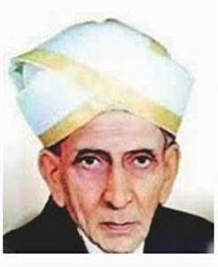

Er.Mokshagundam Visvesvaraya was born on 15 September 1861 to a TeluguBrahmin family,[5][6] to Mokshagundam Srinivasa Shastry and Venkatalakshmamma in Muddenahalli village, Chikkaballapura District (bifurcated from Kolar District), Mysore State (now Karnataka), India.[7] His father was a noted Sanskrit scholar. Visvesvaraya Technological University is named after notable Indian engineer, scholar, statesman and the recipient of highest honour ‘Bharata Ratna’ Sir. M. Visvesvaraya. VTU is an institution that is rich in history, academic excellence, and leadership. The University is performing and continues to perform with a VISION, MISSION and MANDATE. Visvesvaraya Technological university is one of India’s leading and largest technological Universities. It has 202 affiliated engineering colleges under its jurisdiction. Every year over 50,000 students graduate from this University who are the next generation technical leaders, thinkers, innovators and scholars
